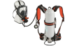

2024年
問題134 排水設備の維持管理に関する次の記述のうち，最も不適当なものはどれか．
（1）排水水中ポンプは，6か月～1年に1回，メカニカルシール部のオイル交換を行う．
（2）排水糟内の悪臭防止対策としては，排水貯留時間が5～6時間程度となるように，タイマ制御による強制排水を行う．
（3）グリース阻集器に設置されたトラップの清掃は，2か月に1回程度行う．
（4）排水槽の清掃作業は，酸素濃度を確認した後，硫化水素濃度が10ppm以下であることを測定・確認して行う．
（5）通気管は，1年に1回程度，定期的に，系統ごとに異常がないことを点検・確認する．
2024年
問題134 正解（2） 頻出度AAA
5～6時間は長すぎる．特に厨房排水が流れ込む排水槽では槽内汚物の腐敗が進行し悪臭が発生しやすい．2時間を超えて貯留しないようにタイマーでポンプを運転し，強制排水する．
ビルピット内で汚水は徐々に腐敗して，臭気の原因となる硫化水素が発生する，硫化水素はビルピット内ではほとんど排水中に溶解しているが，排水ポンプによって公共下水道に排出されるときに気体化して，道路上の雨水ますなどから悪臭を周辺に放つことになる．また，硫化水素は反応性が高いためビルの排水設備だけではなく公共下水道を損傷させる．東京都では「ビルピット臭気対策マニュアル」の中で，排水ポンプの運転を水位・タイマー併用方式とし，2時間以内ごとに排水するよう指導している．
-(1) 排水ポンプの定期点検2024-134-1表参照．
2024-134-1表 排水ポンプの定期点検
| 日常点検 | 吐出し圧力，揚水量，電流値，騒音，振動等の異常の有無を確認する． |
| 1カ月に1回 | 絶縁抵抗の測定を行い，1MΩ以上あるか確認する． |
| 6カ月～1年に1回 | 水中ポンプのメカニカルシール部のオイル交換 |
| 1～2年に1回 | メカニカルシールの交換 |
| 3～5年に1回 | オーバホール |
-(3) グリース阻集器の維持管理については2024-134-2表参照．
2024-134-2表 グリース阻集器の清掃
| ストレーナーのちゅう芥 | 毎日除去 |
| グリース | 7～10日に1度除去・清掃 |
| 槽内の底，壁面，トラップ等に付着したグリースや蓄積物 | 1カ月に1回程度高圧洗浄器にて洗浄・バキュームによる引き出し |
| トラップの清掃 | 2カ月に1回 |
掃除後は内部の仕切板などを正しく装着し，機能の維持を図る．
バキュームによって引き出されたグリースや蓄積物は産業廃棄物となる．
-(4) 「建築物における維持管理マニュアル」（厚生労働省通知）より
過去に，排水槽の清掃中，硫化水素による事故が発生している．このような排水槽の清掃では，酸素欠乏危険作業主任者の資格を有するものが作業を指揮し，最初に酸素濃度が18%以上，硫化水素濃度が10ppm 以下であるか確認してから作業を行い，十分換気を行うこと．
また，空気呼吸器（2024-134-1図参照），安全帯等を使用し，非常時の避難用具等も備えておくことが必要である．

出典 株式会社 重松製作所
https://www.sts-japan.com/products/scba/a1_12.php